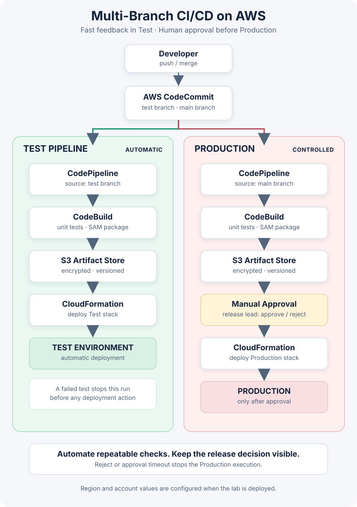

[Project Showcase] AWS Multi-Branch CI/CD: Fast Tests, Deliberate Releases | Tự động hóa kiểm thử, kiểm soát Production
🇻🇳 Bản tiếng Việt nằm ở phía dưới.
[Project Showcase] AWS Multi-Branch CI/CD: Fast Tests, Deliberate Releases
For a while, deploying a small app by hand feels manageable. Then a test gets skipped, someone uploads the wrong build, or nobody can quite remember what changed in Production. I wanted to explore a simple way to make the repeatable parts automatic while keeping a person responsible for the release that affects real users.
This lab uses two CodeCommit branches and two separate CodePipelines. A push to test runs unit tests, packages the app, and deploys a Test stack through CloudFormation. A push to main runs the same checks, then stops at a manual approval action before CloudFormation can update the Production stack.

Figure 1. Test deploys automatically; Production waits for a release lead. / Hình 1. Test được triển khai tự động; Production chờ release lead phê duyệt.
Why keep two pipelines?
Test and Production have different jobs. In Test, a developer needs feedback quickly. Once the branch changes, CodePipeline starts CodeBuild, which runs the Node.js unit tests and packages the AWS SAM template. The resulting package is placed in the versioned, encrypted S3 artifact bucket and CloudFormation updates the Test stack. A failed test ends the run before deployment.
Production uses the same shape through the build. Its pipeline then pauses at Manual Approval. The release lead can review the commit, build result, and release notes, then approve or reject the run. Only approval allows the Production CloudFormation action to continue. The approval action can notify an SNS topic; a release lead still needs to subscribe an email endpoint to receive those notifications.
push to test → CodeBuild: test + package → S3 artifact → CloudFormation → Test
push to main → CodeBuild: test + package → S3 artifact → Manual approval → CloudFormation → Production
In the lab template, both pipelines build their own branch revision. Merging tested code to main triggers a new production build, and that pipeline's package is the one held at approval and deployed. This is not a claim that the exact S3 object from the Test run is promoted. If a team needs cryptographic promotion of the exact same artifact, I would use a single pipeline with an immutable artifact flowing between environment stages, or add an explicit artifact promotion design.
What I put in the repository
The repository contains a tiny Lambda health endpoint, dependency-free Node.js tests, an AWS SAM application template, a CodeBuild buildspec, and a CloudFormation template that creates the two pipelines. The same build checks run before packaging. The Test and Production stacks have different names, so a test deployment does not overwrite the production stack.
I kept the sample application intentionally small. The useful part of this project is the release boundary: failed tests stop early, artifacts have a managed store, and Production has an explicit human decision before infrastructure changes. The template is a learning reference and still needs account-specific review, especially around IAM, rollback, alerting, artifact lifecycle, and who can approve a release.
What this does not solve by itself
A manual gate does not make a release safe automatically. Reviewers need useful test evidence, a clear change summary, and a rollback plan. Pipeline permissions should be scoped to the real repository and stacks, and higher-risk systems usually need stronger separation such as distinct AWS accounts for Test and Production. I would also add integration tests, CloudFormation change-set review, deployment alarms, and an operational rollback exercise before using this pattern for a real service.
The pipeline stack creates AWS resources, so I would check the account's budget and remove the lab stacks when finished. The code is not deployed to a live AWS account as part of this portfolio write-up.
You can explore the source and setup notes in the AWS Multi-Branch CI/CD Lab repository.
[Project Showcase] AWS Multi-Branch CI/CD: Tự động hóa kiểm thử, kiểm soát Production
Có thời điểm triển khai một ứng dụng nhỏ bằng tay vẫn khá tiện. Nhưng rồi có lần quên chạy test, có người tải nhầm bản build, hoặc cả nhóm không nhớ chính xác thay đổi nào đang nằm trên Production. Mình muốn thử một cách tự động hóa những bước lặp lại, đồng thời vẫn giữ một người chịu trách nhiệm cho lần phát hành có ảnh hưởng tới người dùng thật.
Lab này dùng hai nhánh CodeCommit và hai CodePipeline riêng. Khi có thay đổi ở test, pipeline chạy unit test, đóng gói ứng dụng rồi tự triển khai stack Test bằng CloudFormation. Với main, pipeline cũng chạy cùng các bước kiểm tra và đóng gói, nhưng dừng ở bước Manual Approval trước khi CloudFormation cập nhật stack Production.
Vì sao tách thành hai pipeline?
Test và Production có mục tiêu khác nhau. Ở Test, developer cần nhận phản hồi sớm. Mỗi lần nhánh thay đổi, CodePipeline gọi CodeBuild để chạy unit test Node.js và đóng gói template AWS SAM. Gói triển khai được lưu trong S3 artifact bucket có bật versioning và mã hóa; sau đó CloudFormation cập nhật stack Test. Nếu test thất bại, pipeline dừng trước deployment.
Production cũng tự động hóa tới hết bước build. Sau đó pipeline dừng tại Manual Approval. Release lead có thể xem commit, kết quả build và ghi chú phát hành rồi chọn approve hoặc reject. Chỉ khi được duyệt thì action CloudFormation cho Production mới tiếp tục. Bước approval có thể gửi notification qua SNS; release lead cần đăng ký email endpoint vào topic để nhận thông báo.
Trong template của lab, hai pipeline tự build phiên bản của nhánh tương ứng. Khi code đã kiểm thử được merge vào main, pipeline Production chạy một lượt build mới; chính package của lượt chạy đó sẽ được giữ ở bước approval rồi triển khai. Vì vậy, đây chưa phải cơ chế đưa nguyên S3 artifact từ lần chạy Test sang Production. Nếu cần bảo đảm promotion chính xác cùng một artifact, mình sẽ dùng một pipeline duy nhất với artifact bất biến đi qua các stage môi trường, hoặc thiết kế riêng một bước promote artifact tường minh.
Nội dung trong repository
Repo có Lambda health endpoint nhỏ, unit test Node.js không cần thư viện ngoài, template ứng dụng AWS SAM, buildspec cho CodeBuild và CloudFormation template tạo hai pipeline. Pipeline chỉ đóng gói sau khi test thành công. Hai stack Test và Production có tên riêng, nên deployment ở Test không ghi đè Production.
Mình cố tình giữ ứng dụng mẫu nhỏ. Phần đáng học ở đây là ranh giới phát hành: test lỗi thì dừng sớm, artifact có nơi lưu trữ, còn Production cần quyết định rõ ràng từ con người trước khi thay đổi hạ tầng. Template hiện là tài liệu học tập; trước khi dùng thật cần rà soát IAM theo account, rollback, cảnh báo, thời hạn lưu artifact và quyền phê duyệt.
Những gì mô hình này chưa tự giải quyết
Manual gate không tự làm một bản phát hành an toàn. Người duyệt vẫn cần bằng chứng test đủ hữu ích, mô tả thay đổi rõ ràng và phương án rollback. Quyền của pipeline nên được giới hạn theo repository và stack thực tế; hệ thống quan trọng thường cần tách Test và Production sang AWS account riêng. Trước khi áp dụng cho dịch vụ thật, mình sẽ bổ sung integration test, xem CloudFormation change set, alarm sau deployment và diễn tập rollback.
Stack pipeline tạo tài nguyên AWS, vì vậy nên kiểm tra budget và xóa lab khi dùng xong. Bài portfolio này không triển khai project lên một AWS account đang vận hành.
Bạn có thể xem mã nguồn và hướng dẫn trong repository AWS Multi-Branch CI/CD Lab.